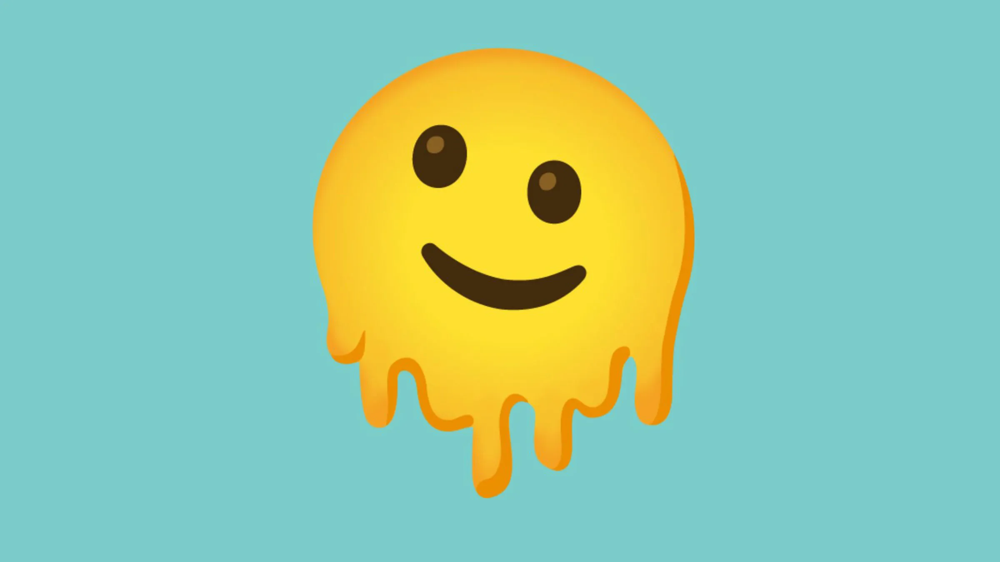

Amigos
En la secundaria tuve buenos amigos, los considero
con ese nombre porque fueron las primeras personas con las
que hable desde la primaria, sus nombres, eran Diego, Alex,
Santiago, Jose, tambien echaban mucho relajo, decian cualquier
cosa, hacian bromas y muchas cosas mas, no tengo foto de ellos,
porque nunca se me ocuriio tomar foto, no pense que lo fuera a
ocupar, tambien en la prepa hize algunos amigos, que quieren que
diga de ellos?, tambien me caen muy bien, aunque tenga poco tiempo
de conocerlos.
